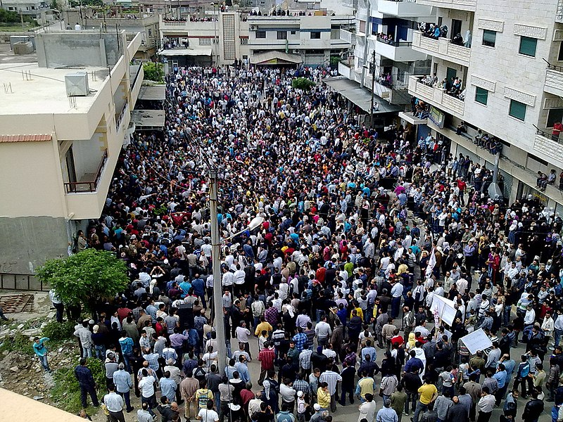
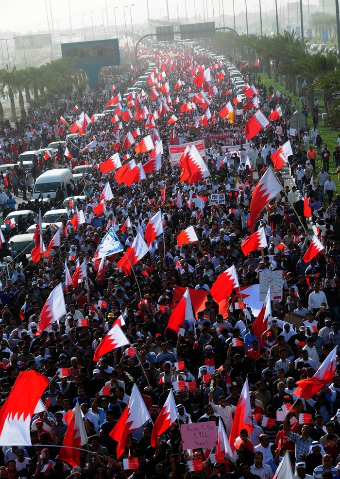
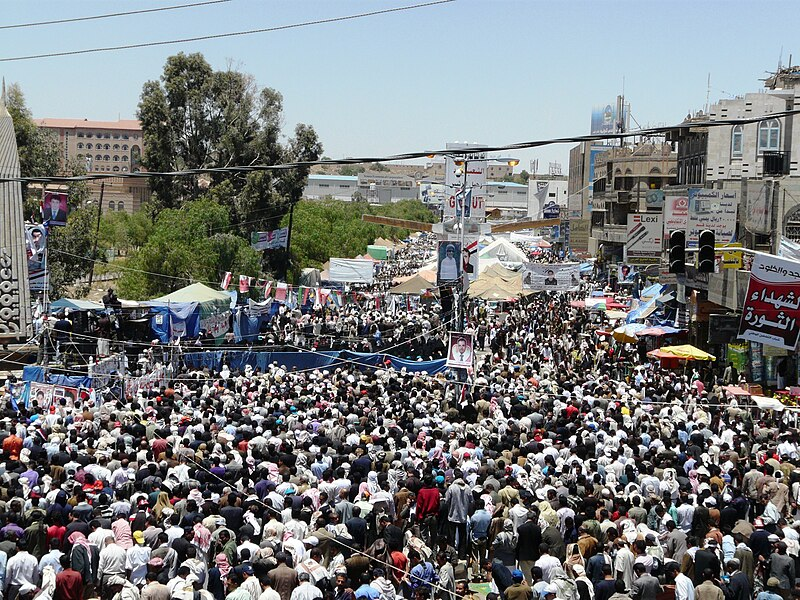
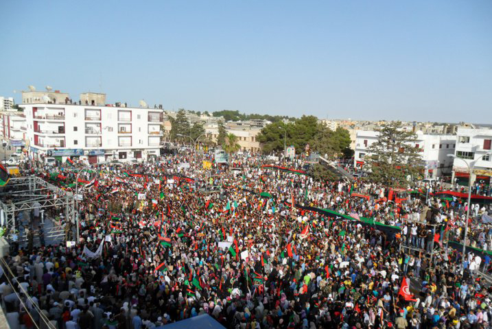
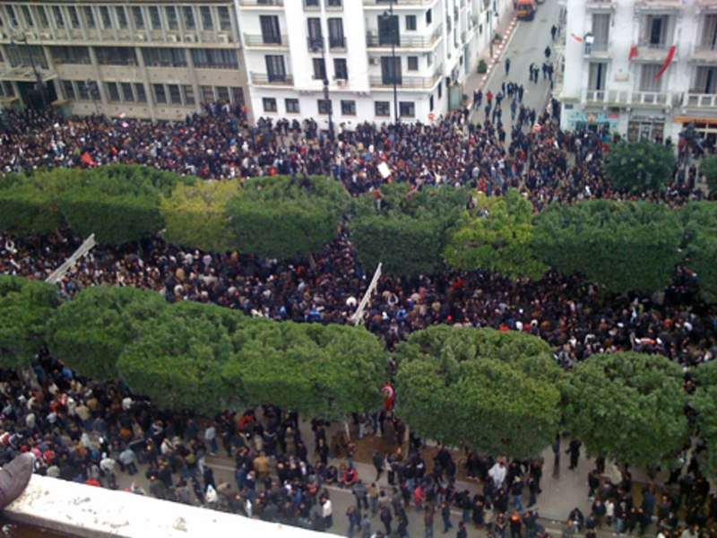
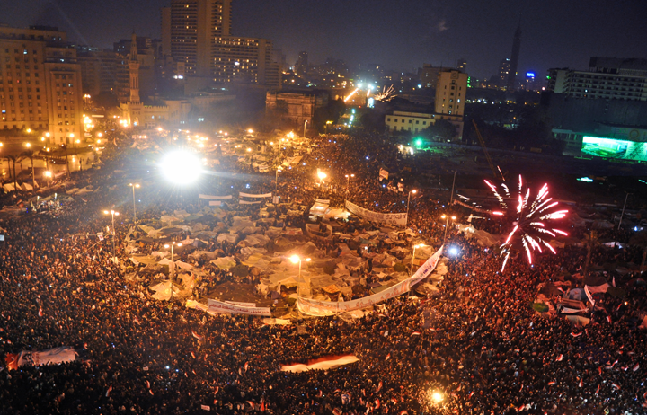

Protestos e Descontentamento: O Início da Primavera Árabe
Primavera árabe foi uma série de protestos de rua nos países árabes do norte da África e no oriente médio em 2010, pela repressão, insatisfação popular, perda de direitos fundamentais, desemprego, corrupção e pobreza.
Síria
Bahrein
Iêmen
Líbia
Tunísia
Egito
Sem mais imagens
Renascimento de Demandas: A Origem do Nome "Primavera Árabe"
O nome primavera árabe deu-se da ideia de um renascimento ou florescimento de demandas por liberdade e justiça sobre os países árabes, que há muito tempo estavam sob regimes autoritários e opressivos.
Consequências Devastadoras: O Impacto da Primavera Árabe na Síria e Além
Isso tudo resultou em guerra civil na Síria, mortos e feridos pela repressão aos protestos, crises políticas, refugiados, e conflitos internos, são algumas das consequências da primavera árabe.